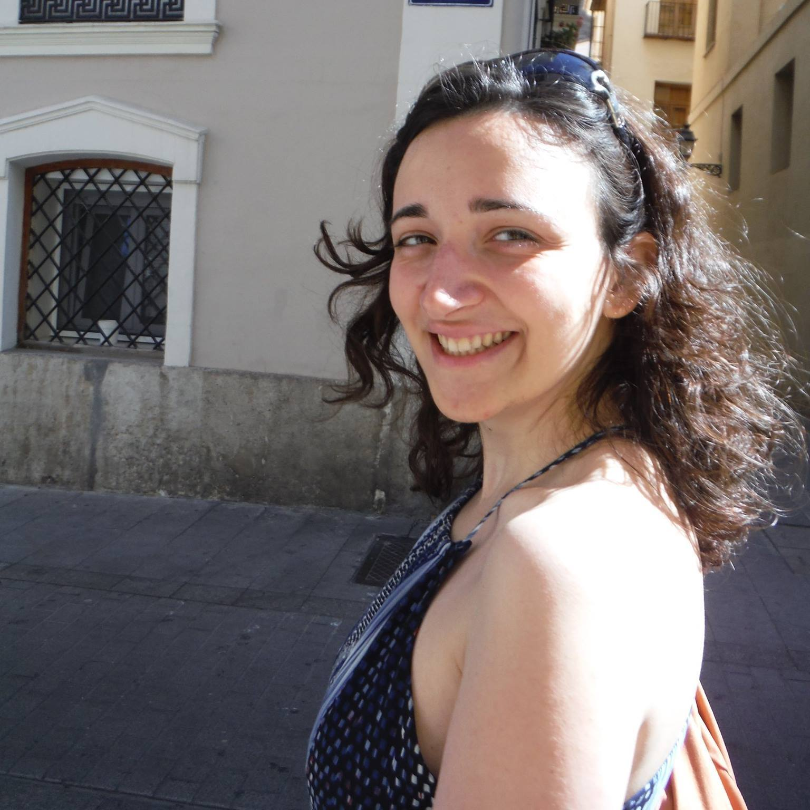
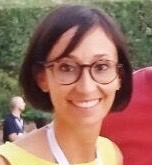
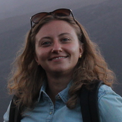

j-ISBA board members
Valerie Poynor. Section Chair
Hi! My name is Valerie Poynor, and I am currently an Assistant Professor at the Mathematics Department of the California State University, Fullerton. I obtained my PhD at the University of California Santa Cruz under the supervision of Athanasios Kottas. The focus of my dissertation was on Bayesian nonparametric modeling and inference for the mean residual life function in survival analysis. I later went on to work as Postdoctoral researcher at the Southwest Fisheries Science Center under the CSTAR (Center for Stock Assessment Research) program in Santa Cruz. I worked under Stephan Munch and Marc Mangel on combining Bayesian nonparametric methods and stochastic optimization for fisheries management. My research interests include Bayesian nonparametric modeling with application in survival analysis, fisheries management/ecology, and neuronal data analysis.
Daniele Durante. Section Chair-Elect

My name is Daniele Durante, I am currently an Assistant Professor at the Department of Decision Sciences of the Bocconi University, Milan. Previously I was a Post-Doctoral Research Fellow at the department of Statistical Sciences of the University of Padova, where I also obtained my PhD in Statistical Sciences on April 2016, under the supervision of Professors Bruno Scarpa and David B. Dunson. My research is characterized by an interdisciplinary approach at the intersection of Bayesian methodology, modern applications, and statistical machine learning. This led me to develop flexible and computationally tractable probabilistic representations of complex scientific phenomena, which are able to effectively extrapolate accurate knowledge from high-dimensional and noisy data. Examples include, networks, arrays, functions, and other object-type variables. You can find something more in my webpage.
Clara Grazian. Treasurer
Clara is a Postdoctoral Scientist who has joined the Nuffield Department of Medicine of the University of Oxford in January 2017, after completing a double PhD in Applied Mathematics and Statistics in Universite' Paris-Dauphine and Sapienza University of Rome, where she studied methods to perform Bayesian inference for complicated models, such as dependence and mixture models. She is currently involved in studying the mechanisms of development of drug resistance in Mycobacterium Tuberculosis, by using genome-wide association studies. In her work, she tries to use both frequentist and Bayesian methodologies to work with large datasets. See her webpage for more information.
Lucia Paci. Program Chair
My name is Lucia Paci, and I am currently an Assistant Professor in Statistics at the Department of Statistical Sciences of the Universita' Cattolica del Sacro Cuore, Milan. Formerly, I was a Post-Doctoral Research Fellow at the Department of Statistical Sciences of the University of Bologna, where I also obtained my PhD in Statistics in 2014. My research focuses mainly on spatial and spatiotemporal modeling under the Bayesian framework. I am also interested in graphical models and model selection. My fields of application range from environmental and ecological sciences to social and economical sciences.
Silvia Montagna. Secretary
My name is Silvia Montagna and I am currently a Lecturer in Statistics in the School Mathematics, Statistics, and Actuarial Science at the University of Kent (UK). Before joining Kent, I spent three years at the University of Warwick (UK) as a Post-Doctoral Research Fellow. I obtained my PhD in statistical science at Duke University (USA) in December 2013. My research interests lie primarily in the development of Bayesian methods for functional data analysis and, more recently, spatial point pattern analysis. The motivation comes from a variety of applications, but currently my focus is on neuroimaging data.